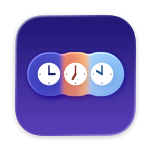

Privacy Policy
GlassTime for Mac
Privacy Policy
Last updated: November 24, 2026
GlassTime is a world clock for macOS. It is built to work entirely on your Mac, and it does not collect any information about you.
No data collection
- GlassTime does not collect, store, transmit or sell any personal information.
- There are no accounts, no analytics, no advertising and no third-party SDKs.
- GlassTime does not track you across apps or websites.
- GlassTime makes no network connections.
What stays on your Mac
Your settings — the cities you add, their working hours, the widget style and your other preferences — are saved only on your Mac, inside GlassTime's own sandboxed storage. They are never sent anywhere. Deleting the app removes them.
Permissions
GlassTime does not ask for access to your location, contacts, files, camera, microphone or Accessibility features. Keyboard shortcuts and launch at login use standard macOS features that need no extra permission.
Crash reports
If you choose to share crash data with app developers in System Settings › Privacy & Security › Analytics & Improvements, Apple may provide anonymous crash reports for GlassTime to its developer. That sharing is controlled by you and handled by Apple under Apple's Privacy Policy. The reports are used only to fix bugs.
Children
GlassTime collects no data from anyone, including children.
Changes
If this policy changes, the new version will be posted on this page with a new "Last updated" date.
Contact
Questions about privacy? Open an issue at github.com/0xnoahzhu/glasstime-site/issues.